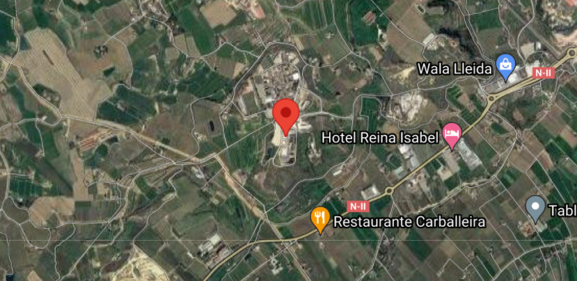

|  | L’Institut està situat a 3 Km. de Lleida al Complex de la Caparrella integrat per una xarxa de serveis educatius de la ciutat: INEF, Escola d’hosteleria, … L’horta és l’entorn natural que voreja els accessos al centre. Finques de fruiters: pomeres, presseguers, perers ens acompanyen des de la sortida de la ciutat pel camí de la Mariola o ens queden a mà esquerra a la partida de Rufea si hi accedim des de la Nacional-2. La xarxa d’autobusos resol sense problemes les dificultats de desplaçaments dels alumnes i per tant ser als afores en una zona rural té els avantatges de gaudir d’un entorn natural i de disposar d’àmplies zones ajardinades i d’una excel.lent il.luminació, trets ambientals que influeixen en la qualitat de la vida educativa en el centre. |